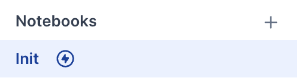
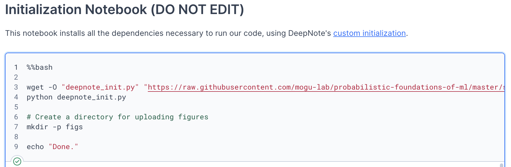
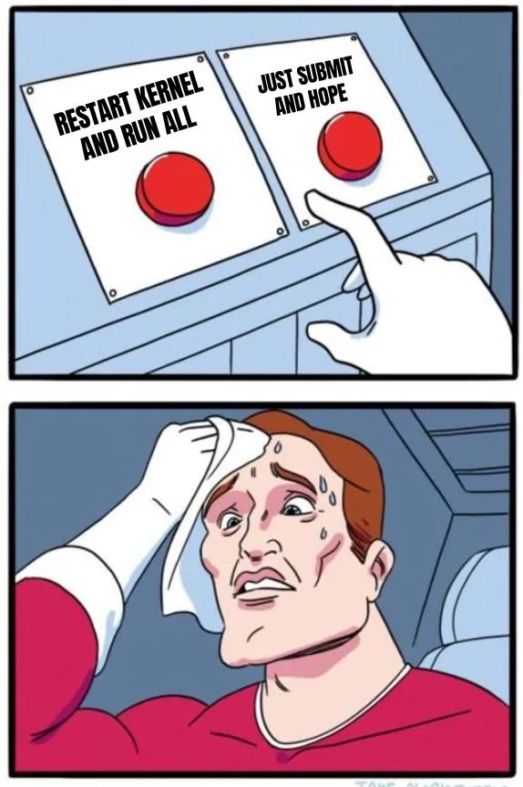
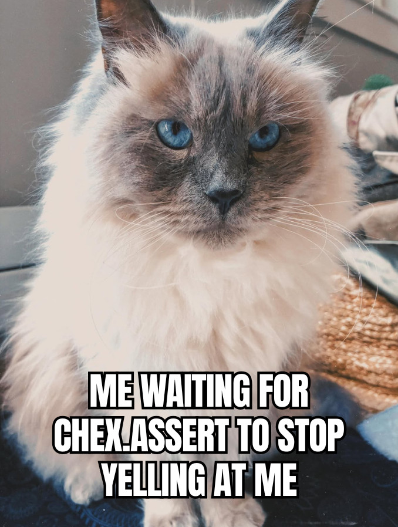
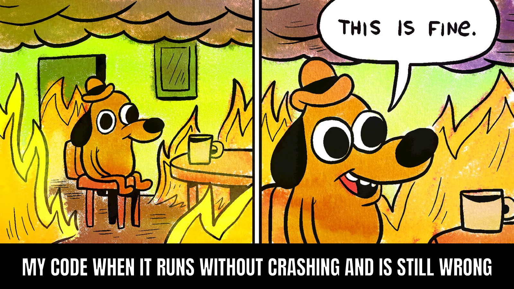
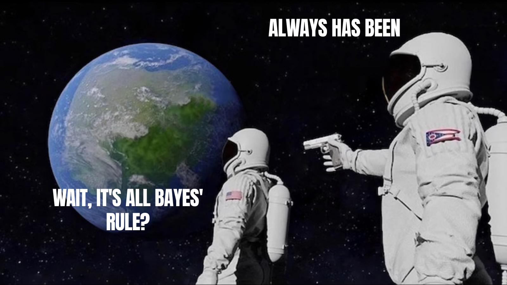

A Guide to Flourishing#
Written by Kailyn ‘28
Welcome!#
CS245/345 is unlike most computer science classes you’ve probably taken before. (Or not, I don’t know. Wellesley has some pretty interesting classes.)
Instead of writing hundreds of lines of code, you’ll spend time learning how to think about probability, machine learning, and mathematical models. You’ll get to write code, but you’ll also do math, and you’ll think about crazy scenarios and enjoy really engaging ethics sessions with Yaniv.
That’s a lot! And it means it’s completely normal to feel confused during the first few weeks. In fact, as Yaniv will explain throughout the course, confusion is a normal part of the learning process. You’re learning concepts that are genuinely new and often connecting math, code, and theory at the same time, so not understanding something immediately doesn’t mean you’re doing something wrong.
This guide isn’t meant to, should not, and will not replace lecture, office hours, or the course textbook, but it is a collection of practical advice that helped me flourish in the class, first as a student and then as someone who got to watch a whole new set of students hit the exact same speed bumps I did.
Wait, “Flourishing”?#
I originally called this the Survival Guide, because I feel like the default to a guide is it being for “survival”. But one thing Yaniv likes to talk about is being very intentional with your language. “Survival”, to me, implies you’re just trying to make it out alive, when really, this class is designed specifically for you to grow. In fact, Yaniv wrote a whole paper about designing the class! Framing it as survival can make the confusion feel like a threat.
I’ll admit, when Yaniv gently pushed back about the whole “survival” thing, I didn’t really think it was that big of a deal. But he’s right that the two mindsets lead you to do pretty different things. If you’re in survival mode, confusion feels like evidence you don’t belong, and the instinct is to hide it, grind alone, and just try to get to the other side. If you’re aiming to flourish, confusion is a regular part of the process, and the response is to ask questions, get support, and keep going. Same class, same difficulty, but very different relationship. Hopefully.
So: still practical, still occasionally sarcastic, but aimed at helping you actually grow into this material instead of just gritting your teeth through it.
About This Guide#
Hi! I’m Kailyn, a CS/DS student and TA for CS245! I took CS345 (before CS245 existed) before becoming a TA, so I’ve experienced both the “what on earth is this?” side and the “let me help you figure out what on earth this is” side. Outside of CS, I spend a lot of time playing music, making things, and collecting an ever-growing number of hobbies. If you ever have a question or just want to talk, feel free to find me during office hours!
{kind=link}
TA Tip
Thanks for opening this guide! I put lots of thought into it, so hopefully you find things helpful. And reach out to Yaniv if you want anything added!
Before the Semester Starts#
You do not need to know machine learning coming in — that’s the whole point of the class. But a little refreshing on the Python and math fundamentals expected for the course can save you time later. I highly recommend looking over the materials Yaniv has posted here — there are a lot of helpful tutorials linked, and it’s worth returning to if something feels shaky. (Also, this may or may not be an assignment anyway?)
TA Tip
If numpy is new to you, spend twenty minutes before the semester starts just playing around with arrays, indexing, and broadcasting. There’s a scratch notebook here where you can mess around! It pays for itself many times over.
Deepnote#
This course uses Deepnote so that the homework distribution code and required libraries work consistently for everyone. Deepnote is like Jupyter Notebook, if you’ve used that before, except everything runs remotely. You install packages and run your code on Deepnote rather than on your own computer, so you don’t have to worry about Python versions, library installations, or differences between everyone’s setups. Yay! Some tips I have:
Learn Markdown#
Notebooks have code cells and markdown cells. Don’t skip the markdown cells. Homework questions are often included between the code cells, so make sure you read through the whole notebook. Plenty of past students (myself included) have skimmed right past them. Do so at your own risk.
TA Tip
Before submitting homework, scroll from top to bottom once to make sure you answered every written question. Hopefully thoroughly, and with thought — I know your graders enjoy your responses!
Run the Initialization Cell#
Yaniv has set up the notebooks with an init cell that installs everything you need. It should look something like this:
{kind=link}

{kind=link}

This should run automatically, but if files appear to be missing later or you’re getting issues like **”ModuleNotFoundError: No module named `package_name’ “*, this cell may never have finished, especially if the kernel is glitching.
Be Patient With Kernels#
Sometimes Deepnote takes a while to start. Before assuming your code is broken, it helps to check: Is the kernel still starting? Is another cell already running? Did initialization finish?
There are also times when too many people are using Deepnote at once and it just refuses to cooperate. I’m afraid I can’t really help with that one.
Save Yourself From Deepnote#
Deepnote is generally reliable, but “generally” is doing some work in that sentence.
Start early enough that a slow kernel or a Deepnote outage isn’t a crisis!
Keep a backup copy of any long written answer somewhere else (a Doc, a text file) until you’ve submitted. I’ve saved many a clip of random code in my Apple Notes and am still digging them up out of my history.
Sometimes, while debugging, you’ll make an edit to some data, then change something and run it again, without resetting the data. This can create even more problems for you.
TA Tip
Please ensure that you restart the kernel and run all cells from top to bottom before you submit.
{kind=link}

The Textbook#
Bookmark it first: https://mogu-lab.github.io/probabilistic-foundations-of-ml/
And then read it. I’m serious. This isn’t a traditional textbook — if he hasn’t said it before, Yaniv wrote it specifically for this course!
TA Tip
Keep the textbook open beside Deepnote in split screen while you work on assignments.
Read Actively, Not Passively#
Don’t just read the simple examples in the textbook, mess with them! Try changing the numbers, the assumptions, the distributions, the parameters, and see what breaks. Yaniv is big on intuition and tinkering with things to gain said intuition!
This course spends a lot of time on directed graphical models (DGMs) precisely because they’re a language for making your assumptions explicit. Every distribution you pick, every dependency you draw an arrow for, is not a fact handed down from the math gods. You’ll very quickly learn about inference bias.
For derivations, I recommend the following:
Cover up the next line and try to guess it first. (especially helpful in CS345!)
Rewrite key equations by hand in your own notation rather than just re-reading them.
Don’t be afraid to go down rabbit holes!
TA Tip
If something in the reading catches your interest, ask about it in office hours. I might not know the answer, but I bet Yaniv does, and if he doesn’t, he can point you to something good to read.
Homework Strategy#
Read Before Coding#
It is extremely tempting to jump directly into Python. Instead, I recommend:
Read the referenced textbook section. Homework is usually listed at the end of the section it corresponds to — let us know if there’s ever a mismatch!
Skim the homework notebook.
Whiteboard, if applicable. It is usually applicable.
Then, and only then, should you start coding. You’ll spend much less time debugging.
Write Things Out#
Especially when working with probability — draw diagrams, write equations, work through tiny examples by hand. Machine learning becomes much easier when you can visualize models!
TA Tip
Whiteboard, whiteboard, whiteboard. And then whiteboard some more.
Process Over Outcome#
It’s tempting to measure your progress by whether you’ve “got the answer” yet, especially when you can see other people around you seemingly further along. But a slow, methodical process (forming a small hypothesis, testing it, seeing what breaks, forming the next hypothesis) gets you to a correct and understood answer far more reliably than trying to leap straight to the finish line. If you find yourself stuck with genuinely no forward progress after a real effort, that’s not a personal failing. I would instead treat it as a signal to step away for a bit or bring it to office hours, rather than grinding in place for hours.
Start Early, Even If Just to Read Later#
You don’t have to finish a homework in one sitting, and you probably shouldn’t try to.
TA Tip
Don’t submit your homework immediately after finishing. Instead, come back to it a couple hours later and reread your written answers out loud. If a sentence doesn’t make sense to you out loud, it won’t make sense to whoever’s grading it.
(I have definitely been guilty of referring to things as “things,” which is very not helpful.)
Debugging Tips#
Debugging probabilistic code is different, because your code can run without crashing… and still be wrong. A few sanity checks that catch a surprising number of bugs:
*Check shapes. Print
.shape** constantly. A huge fraction of bugs here are secretly shape mismatches that numpy silently broadcasts into something that runs but means the wrong thing. Yaniv will show you how tochex.assert` – it’s a pain but it’s worth it, and it forces you to know what shape things should be in the first place, which is a great step in the direction of knowing-what-you’re-doing.
{kind=link}

*Sanity-check on a tiny example first. Pick one small enough that you can compute the right answer by hand and compare. The IHH data is often small enough to iterate on quickly, but later in the course, that changes, so choose your runs wisely!
*Read the error message from the bottom up. It’s often frustratingly long, but it will tell you where things went wrong if you read carefully. You could panic-Google the exception name, but I would argue you shouldn’t.
TA Tip
When you’re stuck, try rubber-ducking, wall-ing?, or TA-ing? — i.e. explain your code line by line to a rubber duck, a wall, or a very patient TA. An enormous fraction of bugs get found in the act of explaining them.
{kind=link}

Office Hours#
You should come visit us, we’re super fun! You don’t need to be completely stuck, or stuck at all. During my CS345 days, Yaniv held his OH right after class, and 50% of us just trooped right down to his office with him. It’s super cozy and a whole lot of fun.
TA Tip
Add the Office Hours Google Calendar https://mogu-lab.github.io/cs245/oh.html to your personal calendar right now!
Office hours are more useful the more specific your question is. Mentioning what you’ve already tried and why it didn’t work can save a lot of time (I know y’all are busy). I also recommend saying what you expected to happen and how what you’re seeing is different.
That said, “I don’t even know where to start” is a completely valid thing to bring in too! And if a few of you are stuck on the same thing, come together — it’s more efficient for us and you get to hear each other’s confusions and know you have never had a unique experience in your life :)
Working with Math#
There is more math than many students expect. More than I expected, for sure. And that’s okay! (There’s a reason this class also counts for Data Science credit.) I’d focus less on memorizing equations and more on understanding.
A Note on Notation#
Probabilistic ML notation trips people up early on, mostly because a small set of symbols gets reused constantly. If you’ve taken basic stats before and seen things like \(P(X)\), \(P(X \mid Y)\), and \(\mathbb{E}[X]\), know that we look at them through a slightly different lens, but they’re of course completely reconcilable! This makes the course much easier to navigate, especially when you’re already juggling math, code, and new ML concepts. None of it needs to be memorized up front; it’ll click as you use it, and you’ll get a lot of practice.
{kind=link}

DGMs#
Directed Graphical Models deserve their own mention because they’re everywhere in this class! Draw them, label everything, ask questions.
TA Tip
For every DGM you’re given, practice writing out the full joint distribution it implies, and for every joint distribution, practice drawing the DGM.
Being able to go both directions is what actually means you understand it. (Yaniv will make you do this a lot.)
Why the Math Matters for the Ethics#
This is worth naming explicitly: this class is set up so that the math and the ethics conversations aren’t separate tracks. When you pick a distribution, choose what a model conditions on, or decide what counts as “error,” you’re making a value-laden choice, even when it’s dressed up in notation. Understanding the math well enough to see where those choices live is what lets you meaningfully critique a model instead of just trusting it because it’s “statistical.” (Cough cough… come see me after the very last ethics lesson…) So if you’re someone who came in more interested in the ethics sessions than the derivations (or vice versa), it’s worth knowing the two are going to keep bumping into each other on purpose.
Working With Others & Managing Your Time#
Talking through problems with classmates is one of the best ways to learn this material — probability and DGMs especially tend to click once you’ve argued about them with someone else for ten minutes. We have both collaboration and individual problems, and Yaniv often switches up seating, so you’ll get to know most of the class!
A good rule of thumb regardless of the specific assignment’s policy: you should be able to close your collaborator’s notebook and rewrite your own answer from scratch. If you can’t, you’ve probably copied more than you’ve understood — and that’s fine, it might take a few passes to actually click. (I’ve revisited some topics more than five times and still don’t fully get them. It is what it is, and I have no doubt I’ll be revisiting them many times more.)
Everyone Is More Confused Than They Let On#
It’s easy to walk into a room, see everyone else looking calm and put-together, and assume you’re the only one behind. You are almost certainly not. One of the more useful things you can do for your classmates — and yourself — is to actually say “I’m lost” out loud instead of quietly nodding along. If you lead with a real question instead of pretending you’ve got it, it usually turns out at least three other people were wondering the exact same thing, and now nobody has to sit there alone pretending. This isn’t really a “nice to have” — it’s part of how this specific class works, since a lot of the ethics discussions depend on people being honestly, not performatively, engaged. Plus, Yaniv isn’t lying when he says he loves questions.
This class asks you to be a mathematician, a programmer, and a philosopher (thanks, ethics sessions!) in the same week. This is intentional! Seeing the connections between math, code, and ethics is one of the most important parts of the course. This also means don’t skip the ethics sessions to catch up on homework — they’re genuinely good discussions, not filler, and I really do appreciate thoughtful questions on the reading! They’re also not really about arriving at one correct, spoon-fed answer; a lot of the point is sitting with two perspectives that both have something right about them and not immediately resolving the tension.
Final Thoughts#
You’re learning probability, statistics, machine learning, and programming simultaneously, and that isn’t easy! Take your time, read the textbook, and ask lots of questions.
If you take one thing from this guide, let it be this: everyone who’s made it through this class, myself included, spent plenty of time confused. That’s not a sign you’re behind — it’s basically the shape of the class. But as Yaniv says, it’s great to be confused!
Truthfully, the fact that so much of this field is built on subjective, debatable choices isn’t a bug you have to work around — it’s exactly why your perspective, wherever you’re coming from, is useful here. The methods aren’t fixed and finished; they’re things you’re being trained to question, rebuild, and eventually improve on. And I believe that’s a much better goal than just getting through the semester in one piece.
P.S. — In case anyone is wondering, the word DGM (as an anagram or spelled out) appears a total of 8 times in this 8-page guide.
P.P.S. — Yaniv is trying to get me to make memes, so I hope you enjoyed them. This is my first time! If you didn’t enjoy them, don’t tell me — I’m a very not creative person and I tried my best, okay?
P.P.P.S. — If you’ve read this far, thank you so much! Signing off now!